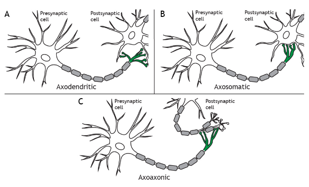
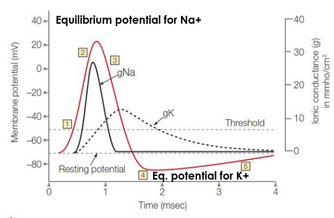

Exams notes
Slide 1
What is cognitive neuroscience?
The study of how the function of the brain can yield the thought of a mind (structure and function are strictly related).
Phrenology
From Franz Joseph: the study of the skull could describe the person behind it -> Localization Mark Dax (1836) reported similar speech problems in patients with left brain damages. 1861, Paul Broca, Tan patient (could say only "Tan") Expressive aphasia: someone that can't talk but still understand Receptive aphasia: someone that can talk but cannot understand, the sentences make, often, no sense.
Cytoarchitectonics
The study of the cellular architecture and difference between regions.
Neurodoctrine
The nervous system is made up of individual cells.
Neural organization
- Dynamic polarization: the electrical signal in the brain flow in just one direction
- Connectional specificity: Cells do not connect randomly: neuron that fires together, wires together.
Rationalism
Everything came from the mind
Empiricism
A lot of things originate from the observation of the surrounding world -> associaltionism, behaviourism
Montreal's procedure to treat epilepsy
Destroy the neurons that causes epilepsy. You can find them by stimulating certain part of the brain.
Slide 2
The nervous system is composed of 2 types of cells:
- Neurons
- Glalias: a lot more than neurons. Their job is to protect the neurons
Types of Glalias
- Astrocytes ~50% of brain cells, star shaped. Can be found everywhere in the brain. They have the job of neuroshing neurons, and they regularize neuortransmitters in extracellular space.
- Oligodendrocytes: support signals, they can be found in the central nervous system.
- Schwann's cells: support signals, they can be found in the peripheral nervous system.
Neuron's structure
- Cell membrane
- cytoplasm: fluid made mostly of ions (potassium and sodium)
- extracellular fluid: same as intercellular fluid but "holds" the neuron
- cell body or soma: center of the cell with the nucleus and the endoplasmatic reticulum which synthesize the proteins
- Axom: long part of the neuron that transport the signal
- Dendrites: little arms from the neuron soma. They get the input signals from other neurons
- Synapses: little arms that, from the axom, transport the information to other neurons.
Types of neuron's connections
- Axosomatic: from the axom to the soma
- Axodendric: from the axom to the dendrites
- Axoaxonic: from the axom to another axom

Types of neurons
- Sensory neurons: carry information from the body to the membrane
- motor neurons: carry commands
- inter neurons: mediate impulses between sensory and motor neurons.
Information exchange between neurons
A resting neuron is charged with negative 70mV with the respect to its outside. This potential is kept by the NA/K+ pump. The alteration of this potential is how the signal occours.
The membrane can be:
- depolarized -> excitatory
- hyperpolarized -> inhibitory
Action potential: It's the mechanism used by the neurons to generate signal
Exchange process

- depolarization by opening the Na gates
- the charge goes positive until it reaches the equilibrium
- the K+ gates open and the charges goes down
- the K+ gates makes the charge go under the 70mV resting potential (hyperpolarized). During this period, the neuron cannot be activated again and the NA gates stay closed. This is called refractory period
- back to normal
The signal, emitted by a neuron, is binary. Therefore, for more intense stimuli, more neurons fire.
From individual cells to neural circuit
- Divergence: a neuron activate many more neurons. This process is important to make sure that a given stimuli reaches the correct neurons.
- Convergence: a neuron is activated by many others. This process is important to make sure that, a neuron gets activated by the correct stimuli
Information exchange between neurons
Synapses can be:
- Electrical: In this case, synapses touch each other. This type of signal is very fast but has little to no plasticiy
- Chemical: In this case, synapses do not touch each other and the signal is transmitted by a neurotransmitter. The neurotransmitter is emitted by the synaptic vesticle in the presynaptic neuron. The Inactivation of the neurotransmitter can be done by re-uptake, neurotransmitter degradation or the neurotransmitter moves away. This kind of signal is way slower than the electrical one, but it's much more plastical.
From circuit to connections
Peripheral nervous system
It is divided in:
- somatic nervous system: handles the delivery and movement of the information
- automic nervous system: handles the moovements
Sympatetic nervous system
Prepare the body for action. It uses norepinephrine, and it's located in the spinal cord
Parasympathetic nervous system
It calms down the body using acetylcholine. It is located up and down the spinal cord.
Central nervous system
The meninges protect the CNS. It is divided in 3 layers:
- Dura mater
- Arachnoid mater
- Pia mater The cerebrospinal fluid is everywhere to help to reduce the pressure of the brain on the skull and mitigate shocks.
Spinal cord
31 segments divided in left and right nerves entering and exiting from the vertebral column. Each spinal nerve has sensory and motor axoms.
The brain
It can be divided in 6 parts:
- Medulla
- Pons
- Midbrain
- Cerebellum
- Diecephalon
- Telecephalon It is mostly simmetric.
Brain stem
It regulates the basic life functions (blood pressure, respiration, ...)
Cerebellum
it is very useful for posture, coordination, regularization of motor, learning motor skills. It is divided in several lobes and has a lot of neurons.
Diecephalon
It contains:
- Talamus: pathway for sensory information
- Hypotalamus: It ts the link between the brain and the endocrine system. It regulates temperature, hunger, ...
Telecephalon
It is the largest part of the brain. It consists of:
- gray matter
- white matter
- basal ganglia
- amigdala
- hippocampus
Basal ganglia
Inputs from the motor/sensory neurons and outputs to the thalamos to frontal lobe. It is extensively interconnected. It controls:
- action selection
- motor preparation
- timing/fatigue
- task switching
direct pathways -> excitatory indirect pathways -> hinibitory
It is very important in reinforcement learning.
Amigdala
Involves:
- attention
- perception
- value presentation
- decision-making
- learning
- memory
hippocampus
- memory formation
- spatial memory
Cerebral cortex
It is a large sheet of neurons, symmetrical.
4 anatomical lobes
- Frontal
- Parietal
- Occipital
- Temporal
Cytoarchitectonic division
We can divide in layer from internal to external. Each layer has similar neurons. A layer of a given layer is connected to the neuron of the layer above and below.
Functional division
- Frontal lobe: motor cortex, prefrontal cortex (decision, planning, motivation values)
- Parietal lobe: receives info from the world, body, memory and combine them. Close neuron gather similar information
- Occipital lobe: visual cortex
- Temporal lobe: sound processing
- Association cortex: Integrate experience
Slide 3
Non-associative learning
Learning about single stimuli. It has 2 forms:
- Abituational: decrease of an innate response to a stimulus presented repeatedly.
- Sensational: opposite to abituational
Associative learning
Learn to associate 2 stimuli/events.
- Primary reinforcer/ Unconditioned stimulus: a stimulus biologically prepared to eclit a response.
- Secondary reinforcer/Conditioned stimulus: a stimulus that eclits a response after learning. Prediction learning: stimulus -> response Control learning: behavior -> outcome
Classical conditioning (Pavlovian learning)
CS with no meaning associated with a US. At the end, the CS will have the same response as the US. -> Conditioned response (CR). CRs can be:
- Behavioral
- Physiological
- change in subjective experience
The timing matter. The CS must be before the US. Frequency also matter:
- continuous response: (always) faster but less resistant to extinction
- partial response: (sometimes) slower but more resistant to extinction
Extinction: after a while, the CS/US association may not be used anymore. Under extinction, a CS/US may return in some case.
VR experiment
Two stimuli: CS+ (stimulus + shock), CS- (only stimulus) Steps:
- let the user adapt
- create the CS/US association
- recreate the same condition and measure fear. At the end, users within the same VR context had better retention than user without it or in the lab.
Extinction isn't forgetting but new learning, memory isn't permanent but gets updated every time it gets used.
Papers
Beyond extinction: erasing human fear responses and preventing return of fear
Give to the user a drug that prevent the memory reconsolidation. If the user remember the association, then, he cannot save it back.
Preventing the return of fear using reconsolidation update mechanism
- acquisition of the fear (CS+ is a square with a shock)
- remind it
- cause extinction
- recreate the fear
- remind the fear in 3 ways: 10 minutes before, 8 hours before and no reminder Users with 10 minutes reminders have better extinction.
Amigdala vs hippocampus
The amigdala handles the physical response, while the hippocampus the "reasoning" behind it. If the hippocampus is damaged, the CS/US association is learned, but the user cannot understand why. The opposite is true if the amigdala is damaged.
Slide 4
Associative learning is learning about contiguity. Temporal contiguity can have 2 forms:
- Delay conditioning CS before, then, CS and US together
- Trace conditioning CS before, then, CS alone. The longer the time between the CS and the US, the slower the learning. Experiment with 2 group of rats:
- Group 1: tone + food after 6s
- Group 2: tone = food after 18s The second group took longer to learn the association.
Plasticity
Hebbian plasticity: neurons that fire together, wire together. The contiguity of CS and US make neurons make new connections. The "memory" is the new connection. This new connection make the US no more needed.
Contiguity is not sufficient
2 experiments:
experiment 1
two groups:
- CS/US together
- CS/US together + random CS occurrence without the US outcome: the second group does not learn the association
experiment 2
two groups:
1) 1) 40%: sound + shock 2) 60%: sounds only 3) 40%: no sound + shock 4) 60%: no sounds no shock 2) 1) 40%: sounds + shock 2) 60%: sounds only 3) 20%: no sounds + shock 4) 80%: no sounds, no shock outcome: only group 2 learns. => The contingency is also needed
We only learn from surprising events
If we put a rat into a box and give him a sound and then, give him a mating partner, it learns the association. If we also pair a light with the sounds, the association is not learned.
Prediction error
The prediction error is the difference between the prediction and the reality. There are several mathematical models to represent it.
where: is the error signal, is 1 if the US is delivered, 0 otherwise and is the expectancy of the US.
Rescola-Wagner model: This model does not predict second order conditioning
Temporal difference model:
Slide 5
Dopamine: It's a neuromodulator (neurotransmitter +)
Dopamine pathways
- Negrostrial pathway: it is useful for movements
- Mesolimbic pathway: useful for motivation
- Mesocortical pathway: useful for motivation
Dopamine carry reward-prediction-error not the reward itself. Experiment: give a monkey a box and measure the dopamine response. If the box has a reward, the dopamine level spikes -> unexpected reward lead to excitment.
After learning about receiving the reward, the animal release dopamine at the CS (box receiving) and not at the US. if the US isn't present, the dopamine stops.

In another experiment, we saw that, giving a monkey a cup with some juice:
- If the monkey expected a low amount of juice and received a medium amount, the dopamine spiked
- if the monkey expected a high amount of juice and received a medium amount, the dopamine plumbed. -> The size of the reward doesn't matter in absolute value but in relative. Timing also matter.
This works also in humans, if we give them 2 decks of card and reward or punish them depending on the drawn card, the dopamine changes accordingly to the reward.
Slide 6
Instrumental conditioning
A response is gradually changed across successive trials toward a desired outcome, reinforcing a behavior.
| delivery outcome | omission outcome | |
|---|---|---|
| positive outcome | positive reinforcer (+ behavior) |
negative punishment (- behavior) |
| negative outcome | positive punishment (- behavior) |
negative reinforcer (+ behavior) |
Schedule
- Continuous: faster learning
- Partial: slower extinction
Partial scheduling ratios
- Fixed ratio: high steady learning with slower learning after outcome delivery
- Variable ratio: high and steady learning
- Fixed interval: slow rate, high response near the interval end
- Variable interval: slow steady rate
Slide 7
There are two ways of learning something:
- Cognitive map: create a mental map of the situation and navigate it to reach a goal
- Stimulus response: memorize the path to follow to reach the goal
gen 0
Toleman's maze experiment: put some rats on a complicate maze and see if they learn to navigate it. The rats are divided in two groups: one receives food reward and the other doesn't. The group which receives a food reward navigates the maze much more efficiently. In further experiments, have been discovered that, if the food reward is given to the groups that has received no reward for the past trials, they rapidly catch up with the other group showing latent learning.
Gen 1
To test if the behavior was goal directed or habitual, they trained a group of rats to get a reward after a particular behavior, then devaluated the reward, and they tested if the behavior would be still perpetrated. The dorsomedial striatum is more active during goal directed behavior, while the dorsolateral during the habitual.
Gen 2
It is the same as Gen 1 but on humans. To gather information on human brains, they used MRI. The results were that, after little training, the behavior was goal directed while it was habitual after intense training. The medial OFC responded more in goal directed behaviors while the DLS responded more in habitual behaviors.